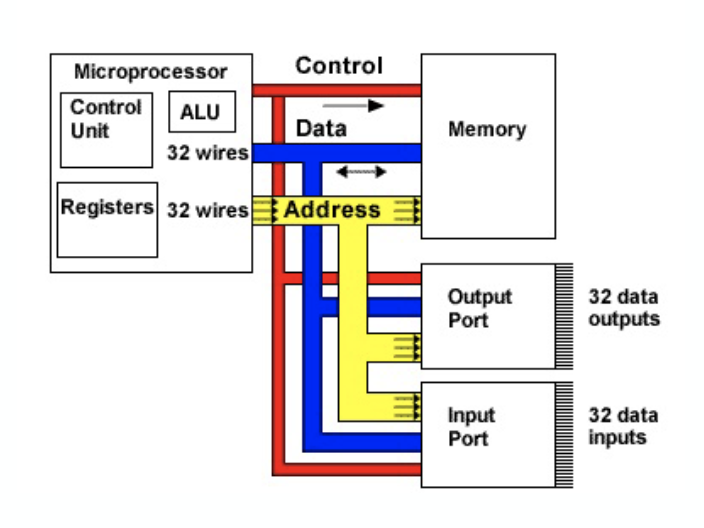

Week 6
Motivation for serial communication
Connect different systems together
- two embedded systems
- a desktop and an embedded system
Connect different chips together in the same embedded system
- MCU to peripheral
- MCU to MCU
Without using a low of I/O lines
- I/O lines require I/O pads which cost and size
- I/O lines require PCB area which costs and size
- Often at relatively low data rates
- But sometimes at higher data rates
So, what are out options?
- Universal Synchronous/Asynchronous receiver transmitter
- Also known as USART (pronounced: “you-zart”)
Serial bus design
Number of wires required?
Asynchronous or synchronous?
How fast can it transfer data?
Can it support more than two endpoints?
Can it support more than one master?
How do we support flow control?
How does it handle errors/noise?
Fun with buses
A multidrop bus (MDB) is a computer bus in which all components are connected to the same set of electrical wires.
- In the general case, a bus may have more than one device capable of driving it.
- That is, it may be a “multi-master” bus.

How to handle multiple (potential) bus drivers?
Tri-state buffer
Tri-state devices, just have one device drive at a time. Everyone can read though.
Pros - very common, fairly fast, pin-efficient
cons
- tri-state devices can be slow
- especially drive-to-tristate?
- need to be sure two folks now driving simultaneously
most common solution (at least historically)
- Ethernet, PCI, etc.

MUX
Just have each device generate its data, and have a MUX selection
- That’s a LOT of pins
- consider a 32-bit bus with 6 potential drivers
- how many pins needed for the MUX?
now generally realistic for an “on-PCB” design as we’ll need an extra device (or a lot of pins on one device)
- but reasonable on-chip, in-fact AHB, APB do this
open collector (drain)
“pull-up” aka “open collector (Drain)” aka “wired OR”
- Wire is pulled high by a resistor.
- If any device pulls the wire low, it goes low.
Pros
- If two devices both drive the bus, it still works!
Cons
- rise-time is very slow
- Constant power drain
Used in I2C, CAN